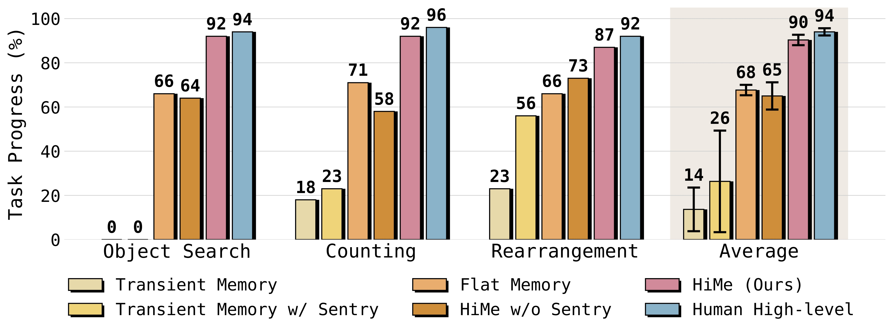

Current Vision-Language-Action (VLA) models excel at robotic manipulation but often struggle with non-Markovian tasks requiring long-term memory and reasoning due to their reliance on immediate observations. Existing solutions face a “frequency-competence paradox,” where high-performance models are too slow for real-time control, while faster models lack sufficient reasoning capabilities. To resolve this architectural misalignment, we propose HiMe, a Hierarchical Embodied Memory framework that decouples embodied intelligence into a high-frequency Executor for execution, a Sentry for working memory, and a Planner for long-term strategy. We also introduce a dynamic knowledge system based on cross-modal semantic schemas and active management mechanisms, allowing robots to maintain memory plasticity through “Add, Update, and Delete” operations. This hierarchical design effectively balances the conflict between real-time execution and slow thinking planning, significantly improving success rates in long-horizon tasks. Experiments demonstrate that this approach not only outperforms flat memory baselines but also exhibits the novel ability to self-correct its internal knowledge based on human preferences.
HiMe organizes embodied intelligence into three functional layers with distinct temporal resolutions: (1) the Executor performs high-frequency sensory-motor control, (2) the Sentry aggregates recent observations and detects subtask transitions, and (3) the Planner performs long-horizon reasoning with episodic memory. Memory is represented as a cross-modal knowledge system with explicit Add/Update/Delete operations that keep the robot’s beliefs consistent over long tasks.

Main results on three long-horizon manipulation tasks.
@article{hime2026,
title = {HiMe: Hierarchical Embodied Memory for Long-Horizon Vision-Language-Action Control},
author = {Anonymous Authors},
journal = {Preprint},
year = {2026}
}